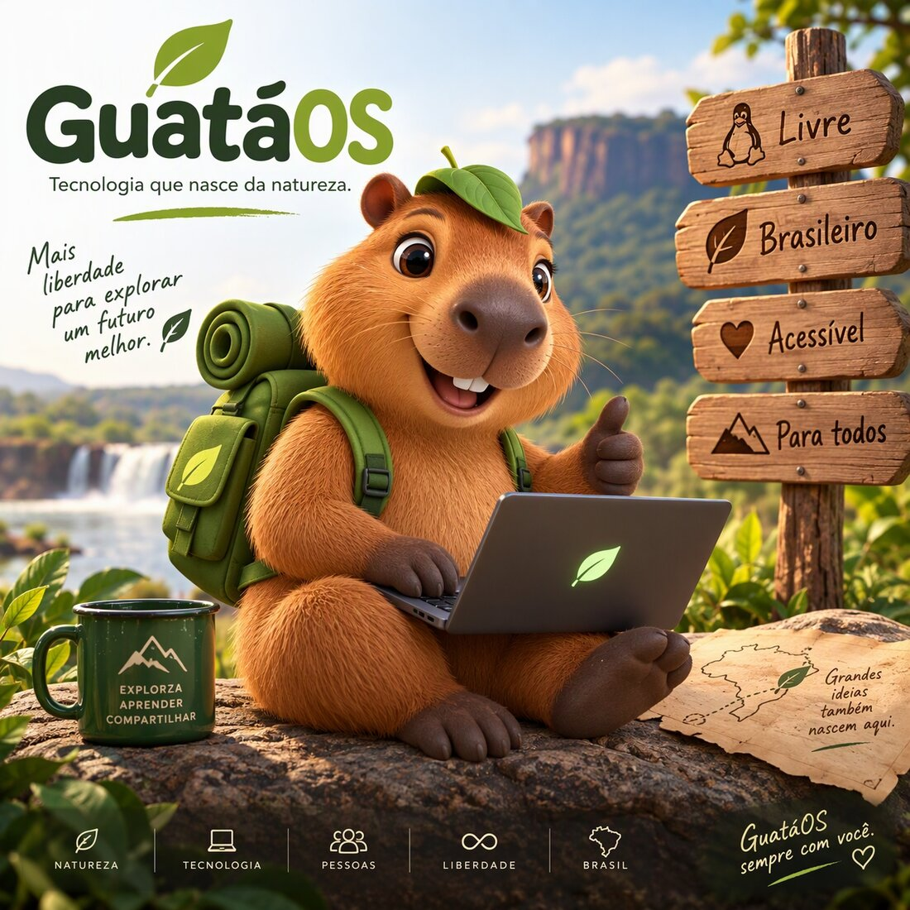

O Guatá OS é um sistema operacional livre e gratuito, feito no Brasil. Rápido num computador antigo, seguro por concepção e simples a ponto da sua mãe usar — sem precisar abrir um terminal nunca.

Instala, abre, usa. Loja de aplicativos em português, zero comando, zero susto.
Pensado pra nossa realidade — leve, em português, com apps que a gente usa de verdade.
Privacidade e segurança desde a base. Seus dados são seus — nada de rastreio escondido.
Coloca o Linux na rede da empresa em 2 cliques — sem uma linha de comando. Único no Brasil.
A capivara exploradora que te acompanha — do boot ao domínio. Calma, brasileira e sempre pronta pra ajudar.
Todo mundo acha que colocar Linux numa rede Active Directory é um bicho de sete cabeças. No Guatá OS é um assistente: você digita o domínio, o usuário admin, e pronto.
Grátis, sem cadastro. Baixe a imagem, grave num pen drive e teste sem instalar nada (modo live) — ou instale de vez.
É o sistema inteiro num arquivo só.
Use o Rufus, balenaEtcher ou "Gravador de imagem".
Ligue o PC pelo pen drive e escolha "Experimentar".
Um instalador guiado em português, com a capivara junto.
Guarde as receitas da família, cozinhe com um timer que acompanha os passos e digitalize as receitas escritas à mão. Funciona offline, instala direto na tela do celular — de graça, sem cadastro.
Toque em "Abrir no celular" pelo navegador do seu telefone.
No menu do navegador, toque em "Adicionar à tela inicial".
Receitas, Modo Cozinha com timer, favoritos e scanner — tudo offline.
Cada bioma vira um papel de parede. Da Amazônia ao Pampa, o Guatá leva a nossa natureza pra dentro do computador.